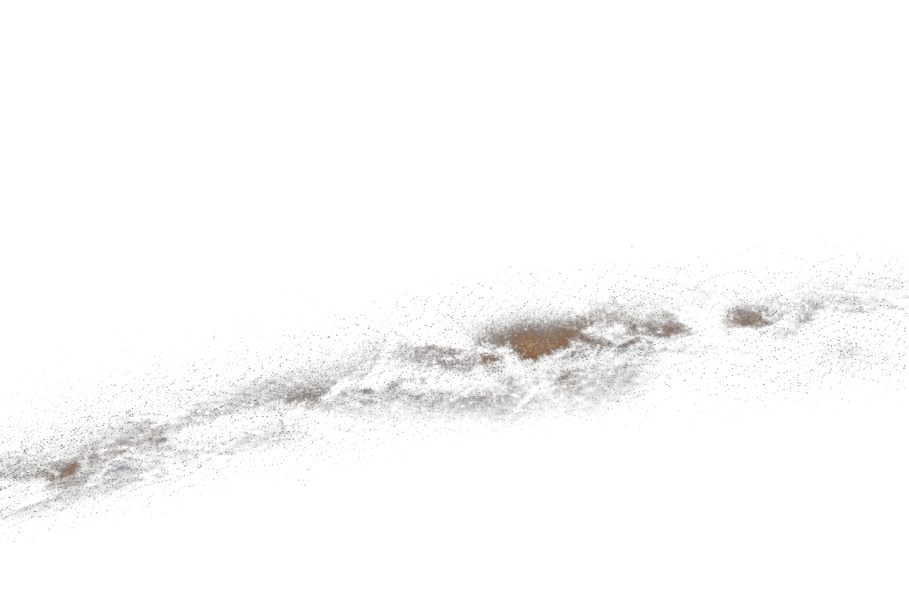
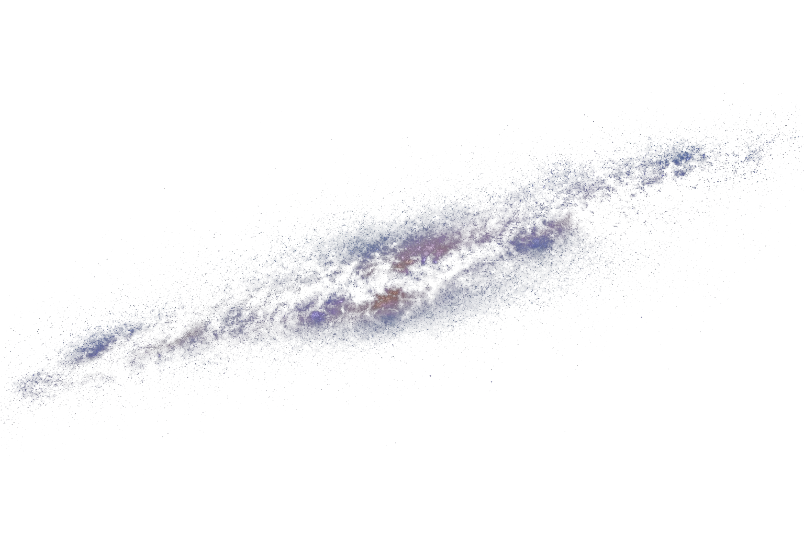
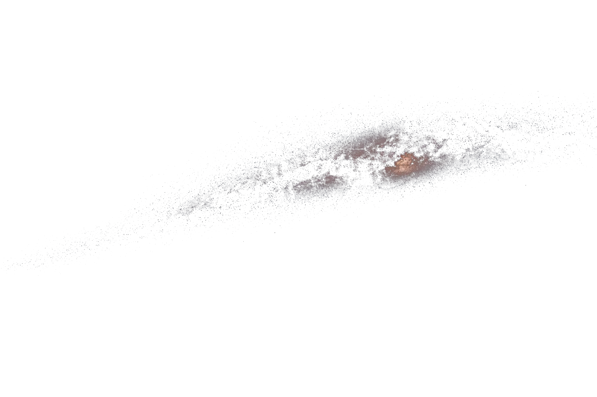

纪念时刻
01距今正在计算相识日 02距今正在计算恋爱日 03距今正在计算领证日 04距今正在计算婚礼日
彼此的起点
02 个生日- 05
距今正在计算小高生日 - 06
距今正在计算小陈生日

旅行足迹
地图支持拖拽或方向键平移，可使用滚轮、加减按钮连续缩放，也可用粒度按钮直接切换；世界地图由国家进入省州层级，中国地图由省份进入城市层级。地图保留全部区域作参照，下方列表只显示已经到访的地点。
正在读取共同坐标…
世界 · 国家总览继续放大查看省州
已经抵达尚未抵达
地图暂时无法显示
仍可通过下方城市轨道阅读全部旅行故事。
博尔塔拉蒙古自治州 · 伊犁哈萨克自治州 · 乌鲁木齐市 · 景德镇市 · 南昌市 · 金华市 · 洛阳市 · 三亚市 · 贵阳市 · 泉州市 · 绍兴市 · 武汉市 · 香港特别行政区 · 南京市 · 湖州市 · 苏州市 · 嘉兴市 · 白山市 · 延边朝鲜族自治州 · 沈阳市 · 宁波市 · 厦门市 · 上海市 · 杭州市 · 绵阳市 · 成都市 · 广州市 · 深圳市 · 西安市 · 长沙市 · 伊斯坦布尔 · 伊兹密尔 · 塞尔丘克 · 安塔利亚 · 科尼亚 · 内夫谢希尔 · 开塞利 · 悉尼 · 墨尔本 · 凯恩斯- 世界探索
- 1.5%已探索 3 / 195 个国家和地区
- 中国省级
- 50%已探索 17 / 34 个省级行政区
- 中国城市
- 8%已探索 30 / 374 座城市
时光档案
2026 年 7 月
新的记忆馆
我们开始重新整理这座共同的数字居所。
12晚饭后的散步
绕远了一点回家，风正好。
周末路线确定
在地图上圈出了下一段共同路线。
雨夜两周年
同一首歌，又听了一遍。
夜路播放列表
新增了三首适合开车的歌。
新的记忆馆
我们开始重新整理这座共同的数字居所。
当前筛选下暂无记录，试试其他分类。

亲友来信